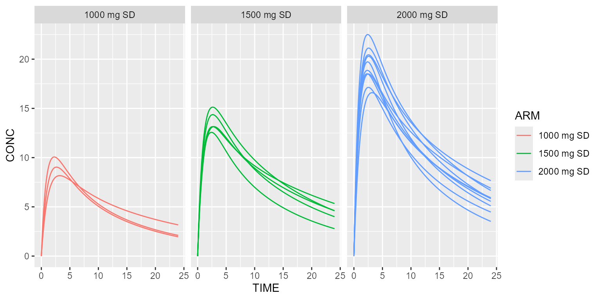

This vignette shows how scenarios can be implemented.
Simulate several protocols at once
Using treatment arms:
model <- model_suite$nonmem$advan4_trans4
arm1 <- Arm(subjects=3, label="1000 mg SD") %>%
add(Bolus(time=0, 1000)) %>%
add(Observations(times=seq(0, 24, by=0.1)))
arm2 <- Arm(subjects=5, label="1500 mg SD") %>%
add(Bolus(time=0, 1500)) %>%
add(Observations(times=seq(0, 24, by=0.1)))
arm3 <- Arm(subjects=10, label="2000 mg SD") %>%
add(Bolus(time=0, 2000)) %>%
add(Observations(times=seq(0, 24, by=0.1)))
results <- model %>% simulate(dataset=Dataset() %>% add(c(arm1, arm2, arm3)), seed=1)
spaghettiPlot(results, "CONC", "ARM") + ggplot2::facet_wrap(~ARM)
Using scenarios:
model <- model_suite$nonmem$advan4_trans4
dataset <- Dataset() %>%
add(Observations(times=seq(0, 24, by=0.1)))
scenarios <- Scenarios() %>%
add(Scenario("1000 mg SD", dataset=~.x %>% setSubjects(3) %>% add(Bolus(time=0, 1000)))) %>%
add(Scenario("1500 mg SD", dataset=~.x %>% setSubjects(5) %>% add(Bolus(time=0, 1500)))) %>%
add(Scenario("2000 mg SD", dataset=~.x %>% setSubjects(10) %>% add(Bolus(time=0, 2000))))
results <- model %>% simulate(dataset=dataset, scenarios=scenarios, seed=1)
spaghettiPlot(results, "CONC", "SCENARIO") + ggplot2::facet_wrap(~SCENARIO)
Make a model parameter vary
Assume we want to test different values of THETA_KA:
model <- model_suite$nonmem$advan4_trans4
ds <- Dataset(50) %>%
add(Bolus(time=0, amount=1000)) %>%
add(Observations(times=seq(0, 24, by=0.1)))
scenarios <- Scenarios() %>%
add(Scenario("THETA_KA=1", model=~.x %>% replace(Theta(name="KA", value=1)))) %>%
add(Scenario("THETA_KA=3", model=~.x %>% replace(Theta(name="KA", value=3)))) %>%
add(Scenario("THETA_KA=6", model=~.x %>% replace(Theta(name="KA", value=6))))
results <- model %>% simulate(dataset=ds, scenarios=scenarios, seed=1)
shadedPlot(results, "CONC", "SCENARIO")
Compare different distributions
Assume we want to compare different distributions of body weight BW:
model <- model_suite$nonmem$advan1_trans2 %>%
replace(Equation("CL", "THETA_CL*exp(ETA_CL)*pow(BW/70, 0.75)")) %>%
disable("IIV")
ds <- Dataset(50) %>%
add(Bolus(time=0, amount=1000)) %>%
add(Observations(times=seq(0, 24, by=0.1))) %>%
add(Covariate("BW", 70))
scenarios <- Scenarios() %>%
add(Scenario("Constant BW")) %>%
add(Scenario("BW ∼ Uniform distribution", dataset=~.x %>% replace(Covariate("BW", UniformDistribution(min=60, max=80))))) %>%
add(Scenario("BW ∼ Normal distribution", dataset=~.x %>% replace(Covariate("BW", NormalDistribution(mean=70, sd=10)))))
results <- model %>% simulate(dataset=ds, scenarios=scenarios, seed=1)
shadedPlot(results, "CONC", "SCENARIO") + ggplot2::facet_wrap(~SCENARIO, ncol=1)